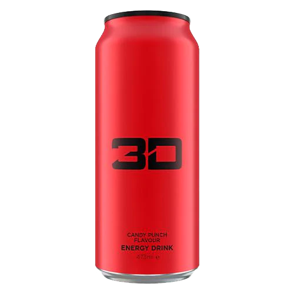

this tastes a lot like every other shitty generic berry energy drink but bad. it's overly sweet. hate it. no. looks and smells like gatorade (which idk what’s up with this brand and making shitty energy type gatorade drinks but they’re failing)
rating: 4/10
gold (pina colada)
brand: 3D
this is fine. it isn't super sweet, but it does not taste like a real pina colada. it taste maybe adjacent to a dumdum lollipop flavor version but eh. it was a let down. passable but wouldn't drink again
rating: 7/10
green (citrus)
brand: 3D
i don't like this. it's not awful but i wouldn't drink it again. "citrus" is so vague and it doesn't even taste that citrus-y. the white one tasted more citrus-y. this is just kinda gross in an overly sweet way. like watered down gatorade
rating: 5/10
purple
brand: 3D
it certainly does taste like purple: artificial grape purple and nerds purple but yeah.
rating: 6/10

red (citrus punch)
brand: 3D
this tastes more like cherry medicine than citrus punch. no. do not like. no thank you.
rating: 5/10
white (frost)
brand: 3D
this is ctirus-y, probably grapefruit but i wouldn't know because the can doesn't actually say what flavor it is, but it's fine. maybe i've raised my standards or this carbonation isn't heavy enough, but idk not great
rating: 7/10
pomegranate
brand: 5-hour energy
very cough syrup vibes. nothing like pomegranate, and just a very condensed flavor. absolutely disgusting and kinda made me feel like my teeth were going to fall out. this carbonation isn't heavy enough, but idk not great
rating: 0/10
tropical burst
brand: 5-hour energy
maybe 5-hour energies just aren’t for me because when i, as someone who’s had many terrible tasting drinks, says this smells like a poison that i’m vaguely terrified of, i feel like it matters just a lil bit. perhaps it’s just because all the flavor is condensed into a tiny bottle but yeah this isn’t for me. it’s tropical but too much. everything about it is too much. to poisonous, too sweet, too tangy, too strong. no. no.
rating: 0/10
açaà berry
brand: adrenaline shock
this tastes absolutely nothing like açaÃ. also it’s clear which i hate and is incredibly off-putting, please just add some food coloring 😠anyways the lukewarm aftertaste is possibly the worst of any energy i’ve ever had in my life which is really saying something. i am: not impressed and adrenaline is not selling me on it. no. and the branding sucks so :/
no.
rating: 4/10
tropical burst
brand: adrenaline shock
this brand sucks ass. it’s barely tolerable when cold so when it’s lukewarm what the fuck. um. the aftertaste is easily the worst i’ve ever tasted. again, why the fuck is it clear.
rating: 3/10
mimosa
brand: alani nu
his smells like orange pine sol and tastes even more like it 😐  this is so disappointing because it sounds like such a fun and funky flavor but then 😐  but it’s fine because alani nu sucks 😤
rating: 2/10
watermelon wave
brand: alani nu
flavor wise i think this is awful: very vitamin water/cough syrup-y, way too artificial/flavorful for something that's supposed to be watermelon, but the part i actually hate is the fact that it's marketed to look healthy even though it's not. yes, it's vegan/vegetarian + has no sugar but just because something doesn't have sugar doesn't mean it's healthy like this has 110% dv of most vitamins in it so
rating: 2/10
cucumber mint
brand: ardor
flavor wise i think this is awful: very vitamin water/cough syrup-y, way too artificial/flavorful for something that's supposed to be watermelon, but the part i actually hate is the fact that it's marketed to look healthy even though it's not. yes, it's vegan/vegetarian + has no sugar but just because something doesn't have sugar doesn't mean it's healthy like this has 110% dv of most vitamins in it so
rating: 6/10
cucumber mint
brand: ardor
again, the sheer fizziness almost completely overpowers the any sort of flavor that would exist. it tastes nothing like cucumber with very little mint. it's okay but i've had better
rating: 7/10
pink grapefruit
brand: ardor
incredibly fizzy, very mild flavor, no smell at all: reminds me a lot of hi-ball. the nutrition label doesn't mention vitamin b12 at all, and i can't find anything about this brand on the internet, so i can't tell if this would be "healthier" than hi-ball, but, in terms of price, hi-ball would be better because there's more for the same price
rating: 9/10
blue razz
brand: bang
really sweet, not amazing, and also not super memorable, and it was disgusting. in addition to that bang is problematic as heck. like. genuinely scarily problematic. ignoring all the political aspects and whatnot (which is not something i'd typically say which really goes to show how problematic bang is), they act as though this "super creatine" is something that is unique to them, and, while it's true that there have been studies done on how creatine is beneficial (primarily in terms of power output), “super creatine†isn’t actually enough creatine to have any effect. also you’d have to take a certain amount daily for it to have an effect and for you muscles to be saturated enough to even Appear to have an effect. so. um. yeah. even going further and ignoring how misleading that is: the amount of creatine that's recommended as a supplement is 3-5g. the amount of super creatine in bang energy is estimated to be around 25mg. so. again. uhhhhhh. but yuh that is just the tip of the iceberg of bold scientific claims
rating: 2/10
cotton candy
brand: bang
okay literally all the can designs are super ugly and the flavors are wack but they’re not bad i guess? thus far they’re all just eh. also i’ve never actually bought a bang i’ve just tried it from over people and i will never pay for this myself. it reminds me of bubbline though which i like
rating: 6/10
purple haze
brand: bang
okay first off if i wasn't suicidal i'd probably be afraid of bang because what the fuck is up with that shit but uhhhh this is so sweet. like it's fake sugar that mostly consists of sugar alcohol but why is it so fucking sweet it makes me want to try the sour heads flavor. it really does taste like purple but not in the same way that the monster ultra violet tastes like purple. that purple is more tangy and mild and then this purple is like grape nerds liquified and shot up with cocaine purple
rating: 4/10
rainbow unicorn
brand: bang
it's like bubblegum flavored cough syrup or smarties which is fine but the part i find issue with is the fact that the nutrition label makes it appear as though it's healthy even though it's clearly marketed in a way that demonstrates it's not, in such a way that it's supposed to attract young people (name of flavors, flavor itself, bright colors, etc), but has so many sus ingredients and all the info i've read about them is sus: why are they telling me i shouldn’t drink it because i have a medical condition and take prescription medicine? why do they use artificial sweeteners that ruin the fizzy?
rating: 6/10
honey
brand: beebad
this reminds of me of bougie natural cough drops, obviously the honey ones, but also the fact that there’s ginseng in it is unsurprising because it definitely has that taste. i wouldn’t say it’s bad, but it’s weird for sure. unique if anything, and i’m still on the fence about it despite having drank the whole can.
rating: 7/10
peach mango green tea
brand: celsius
i was about to say this is my favorite of the celsius’s so far but idk the green tea aftertaste just isn’t my favorite. like that tea texture that makes your mouth feel kinda like grainy and thick? yeah it’s there. it’s not super strong and the peach mango flavor mellows it out but i’m not like amazed with this. i would drink it again though. also i kinda like that none of these have been like super super sweet or have a shit ton of sugar (*cough* red bull with their wack ass fucking like 38 grams of sugar which is only slightly less than the average amount of sugar someone is supposed to consume in a DAY in a single can *cough*)
rating: 3/10
raspberry acai green tea
brand: celsius
upon first taste it’s pretty awful but it’s actually not that bad. like it’s sweeter than i was expecting but in like a tangy way. kinda tastes like cough medicine but weirdly it’s not bad. if this is how healthy energy drinks taste i might as well convert. but i am also okay with dying and if monsters are how i die then that’s just how it be 😌
rating: 4/10
sparkling grapefruit
brand: celsius
this is easily the best one i've tasted so far. most of them tasted like ass but in a 'i would not vomit but i would not have a good time either' but this one was decently fizzy, grapefruit-y and not terrible
rating: 7/10
sparkling kiwi guava
brand: celsius
this gets a higher rating because it's healthy but idk its literally just okay. like it's not bad but it's not good. sarah says it tastes like the exact way drinking orange juice after brushing your teeth feels but that doesn't make any sense to me. anyways. it's not bad. especially given the fact that the smoothie i’m drinking with it tastes like fancy dirt. does not remind me of kiwi or guava though
rating: 4/10
sparkling orange
brand: celsius
i think this only gets such a good rating compared to the other celcius's because it doesn't taste like garbage. celsius is overhyped in a myriad of ways but the top one is easily the fact that it is also marketed as ""healthy"" but then, when you actually look at the nutritional label, there's a lot of issues. none of the vitamins should be that high, and the biotin definitely shouldn't be 1000%, which is a major problem among basically all energy drinks that are marketed for 0/low calorie.
rating: 6/10
sparkling orange pomegranate
brand: celsius
this is disgusting. like i’ve tried some terrible energy drinks but this is so bad that i genuinely don’t even want to finish it. orange pomegranate sounds so fun BUT THEN IT TASTES LIKE TRASH. it smells good and it’s fizzy but the taste 🤮 literally the only thing worse is coke
rating: 0/10
sparkling watermelon
brand: celsius
this reminds me a lot of the kiwi guava one except this one is a much nicer color. a nice light pink. taste wise though? ehhhhhh. it's not to say that it doesn't taste like watermelon because it definitely does but it's like so watermelon-y that it almost tastes artificial. watermelon concentrate esque i suppose. decently fizzy but that doesn't cancel out the meh-ness of the flavor 😤
rating: 4/10
sparkling wild berry
brand: celsius
this tastes like the powdered vitamin emergenc stuff. i like the fizz but the taste is kinda just eh. however. compared to the other celsius's this isn’t complete shit